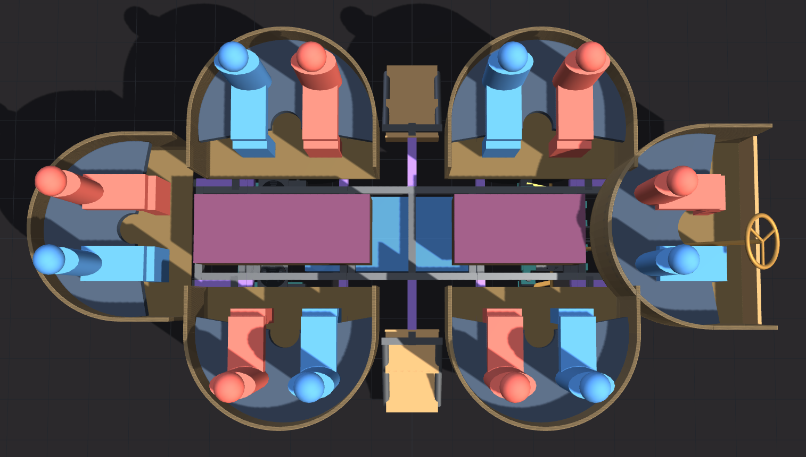
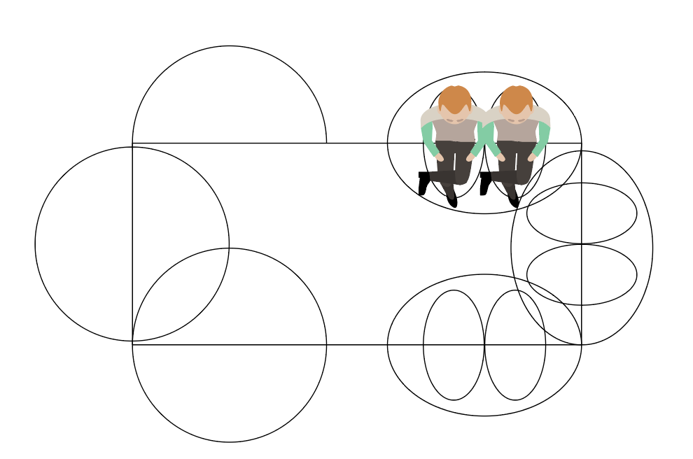

Plan of record · pods · rev 13 September 2026
The pods
Six two-seat loveseats hung off the chassis: two on each side, one on each end. Each is a welded steel tube frame on two receiver arms that slide into the chassis rail and pin, with a Baltic birch shell, a lit translucent wall around the outside and a padded rim at armrest height. Riders face the car. The front pod is the driver's.

What has been decided
- Layout. Six pods, r = 24″: side pods centred at ±33″ along the car and 27″ out from the centreline, end pods tangent to them; the wheels sit under the side pods. Two adjacent side pods leave an 18″ rectangular slot for a stair module. decided
- Mounting: hitch receivers. Two 2 × 3 × 0.188″ steel arms on edge, 28″ apart, welded to the pod's floor frame, slide 13″ into 2½ × 3½″ receiver tubes that pass through the chassis side rail into a cross member; hitch pins retain, anti-rattle wedge clamps take up the slop. End pods use the same receivers through the end rail. The cantilever moment is carried by bearing over the sleeve length rather than bolt tension; playa assembly is slide in, drop two pins. Static moment about the rail face ~12,500 in·lb per passenger pod, designed for ×3; the 2 × 3 arms run ~14 ksi (30 % of yield). decided
- Outline: U, not D. A 180° half round outboard, then two straight 12″ legs back over the deck to the rail face: 48″ wide × 36″ deep. The flat sides give the walkway a rectangular slot the stair fills flush, the straight legs are the end consoles, and a 48 × 36 box stacks two across the 72″ trailer, four per layer. decided
- Ergonomics. From the home loveseat (40″ wide, 17″ to the cushion, armrest at 25″): seat 17″ uncompressed / ~15″ loaded, 20″ deep, tilted ~5°, 4″ HR foam; one continuous padded rim at 25″ above the pod floor that is backrest and armrest, so riders look out over it; backrest ply tilted 15° with 2″ foam. Two adults on the arc at ±40° have ~4″ between shoulders. Knees land past the pod centre, so the pod floor is open on the car side with feet on the deck. Do not go below 48″. decided
- Structure. Frame of ¾ × 0.065″ square steel tube, welded as one unit with the two receiver arms; the nine wall posts stay 1″ so each light module gets a screw landing. Floor frame at deck level with radial joists and a ⅜″ ply floor; a 1 × 2″ front chord on edge into the ±75° posts so the underside of the seat is open storage (~45 × 11 × 20″); seat of eleven ½ × 2½″ birch slats in laser-cut combs (futon style) instead of a pan. Steel for everything that carries people; aluminium and a wood-shell option are kept in the model but not chosen. decided
- Wall: light modules. Six 30° facets on the arc, each bay a ¼″ ply light box (~12.3 × 9.25 × 2″, matte white inside, LED rows on the back plate, laser-cut opal acrylic lid, one connector), two stacked per bay so every plate fits the 19 × 11″ laser bed. Twelve per pod, 72 across the car, all identical and swappable in minutes — and replaceable wholesale next year. A fabric band (same fabric as the cushions) covers the top of the wall; a mirror-acrylic skirt under the floor edge with one LED strip washing it. decided
- End consoles. The two bays past the riders' shoulders are 4.5″-deep boxes from the seat pan to the rim with a flat padded top at rim height — the armrest — and one recessed cup sleeve each (3.5″ dia × 3.5″ deep, drain hole) so nothing sticks out to be knocked. Controller, power distribution and harness terminals live inside. decided
- Weight and the lift. ~128 lb per pod as modelled (142 before the weight pass). Each arm slides into its receiver first (~15 lb), the bare frame with floor and slats (~56 lb) goes onto the arms, modules, consoles, cushions and skirt (~41 lb) go on once the pod is on the car. A cradle at receiver height on the trailer removes the lift entirely. direction — weigh the first pod
- Stairs. One stair module per side in the walkway slot at mid-length, on its own receiver stub: 17″ wide, three 8″ risers with the deck as the top step; kneeled, its bottom tread is on the playa. It needs a handrail (the DMV requires a secure railing on any stairs). Also one hitch-stub boarding step on a spare receiver as an option. decided handrail
- Driver pod. The same U module turned round: the half round to the end rail, the legs forward (16″) carrying a floor with the throttle pedal, brake pedal and dead pedal, a 12″ front gate hinged left between the leg posts, a fold-down one-rung step under the front chord, and a 13″ wheel on a column ~16° from vertical. 52″ wide for two people sitting forward, with a superellipse back (squareness 0.4). F / N / R lever and hand brake on the left console, lighting panel and pack readout on the right. ~200 lb as modelled; arms 2 × 3 × 0.188″ run the full ~64″ under the floor. decided mock up before cutting steel

Key numbers
| Item | Value | Where it comes from |
|---|---|---|
| Pod outline | U: 48″ wide × 36″ deep (180° arc + 12″ legs); driver pod 52 × 42″ | loveseat.md, loveseat-build |
| Positions | side pods (±33, ±27); end pods tangent at −73″ / +75″ (rear rim −97″, driver gate +91″; overall ~188″ × 102″) | frame-3d layout readout |
| Floor / seat / rim above the playa | 24″ / ~41″ / ~50″ at ride height; floor ~18.4″ kneeled; seated eyes ~70″ | loveseat.md ergonomics |
| Receiver arms | 2 × 3 × 0.188″ on edge, 28″ apart, 13″ engaged in 2½ × 3½″ sleeves; ~14 ksi at the ×3 design moment; sleeve reaction ~1,400 lb per arm end | loveseat.md load case |
| Frame tube | ¾ × 0.065″ square (posts 1″); 1 × 2 × 0.065″ front chord (~12 ksi, 0.07″ sag with 200 lb at midspan) | loveseat.md structure |
| Ply | floor ⅜″; modules and consoles ⅛″; backrest ¼″; one 5 × 5 sheet each of ½″, ⅜″, ¼″ and ⅛″ per pod | loveseat-build |
| Light modules | 12 per pod (six bays, two per bay), ~12.3 × 9.25 × 2″, opal acrylic lids; ~530 WS2812 per pod (8.8 m), ~160 W max; ~45 W typical in the model, ~21 W at the calibrated 10 % fraction (lighting page) | loveseat.md, lighting page |
| Weight / cost per pod | ~128 lb, ~$885 in materials; six pods ~765 lb, ~$5,300; driver pod ~200 lb, ~$1,075 | loveseat-build readout |
| Fit at ±40° | ~3.5″ shoulder gap, ~2.7″ hip gap (45° gives 4.4″ / 5.7″) | loveseat-3d |
| Transport | U pods stack 4 per layer, six pods in two layers (arms pulled); the driver pod rides beside the fifth pod on layer 2 | frame-3d trailer view |
Models and drawings
- model/loveseat-build.html — every tube member and panel of one pod, U or D, faceted or smooth, with weight, cost, sheets, LED count, receiver stress and a cut list; the driver-pod toggle draws the pedals, gate, column and wheel; the chassis under the pod with the tire, well, fender and receivers at any kneel. simple · advanced
- model/loveseat-3d.html — the ergonomics study: two seated riders on the arc, seat and rim heights, foam, rider angle, fit readout. simple · advanced
- model/podcar_model.py — generates the 1:12 laser-cut cardboard model (
podcar_sheet_N.svg) from real-world inches; the cardboard mockup is what showed six tangent pods leave no way on or off the car. - Pod vs loveseat plan — the 48″ pod against the 40″ home loveseat with two figures.
{kind=link}
Open items
- Receiver joint: the arm stresses are beam numbers; the sleeve welds, wall bearing, pin holes and anti-rattle retention still need a free-body check, and the first built pod should be load-tested on a jig at the ×3 moment.
- Build one pod first and weigh it before cutting the other five.
- Driver pod: the pedal box, wheel and gate are placeholders from the model; sit in the cardboard mockup before cutting steel.
- LED pitch in the 2″ modules: four rows over 18″ is a 4.5″ pitch, borderline for an even glow at 2″ depth; go to 5–6 rows or a heavier diffuser if the first module scallops.
- Stair handrail design, and the loading/unloading procedure the DMV reviews.
- Wheel wells need an inner fender or the tire throws dust into the storage under the seat.
How we got here
The full working notes are in loveseat.md: why receivers beat the original bolted flange (the sketch), the corrected load case, the ergonomic derivation from the home loveseat, the structure decisions of 12 September, the weight-reduction pass from 142 lb, the wood-shell alternative, and the driver pod. The pod concept itself is design 2 of Selina's nine, chosen over the others on the explorations page; the D-to-U change, the aluminium frame and the smooth-wall diffuser are all still in the model for comparison.
{kind=link}